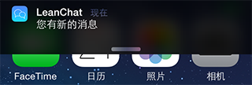
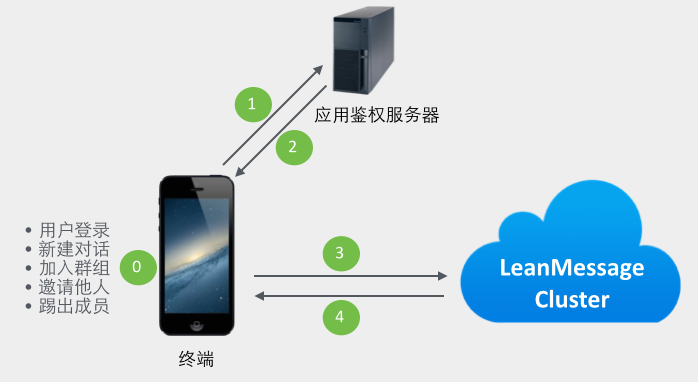
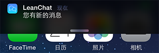
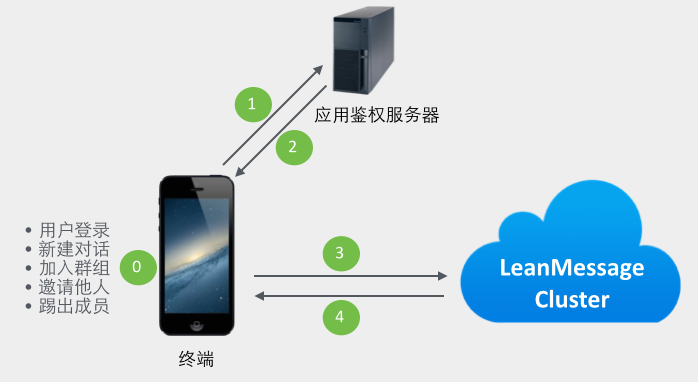

实时通信服务是 LeanCloud 消息服务中的重要一环。你不但可以为应用加入实时聊天、私信等常用功能，还能实现游戏对战等实时互动功能。
目前，我们提供 Android、iOS、JavaScript、Windows Phone 四个主要平台的客户端 SDK，也提供了一些 Demo 帮助你快速入门：
iOS 聊天应用：
Android 聊天应用：
JavaScript 聊天应用
关于这些项目的更多介绍、截图预览，可见 LeanCloud Demos 。
目前新版本实时通信服务接口与旧版本并不兼容，不能互相通信。我们推荐所有新用户直接使用新版本。已有的旧版本用户可以继续参考 v1 版本文档，我们仍然会对已有版本提供支持，并可能在未来提供无缝的迁移方案。已经发布的旧版本用户不会在功能、资源等各个方面受到任何影响，请放心使用。
LeanCloud 实时通信服务定位于完美实现网络层的通讯能力，其设计目标聚焦在：
LeanCloud 实时通信服务的特性主要有：
我们提供几个层面用户接口：
实时通信服务中的每一个终端称为一个 client。client 拥有一个在应用内唯一标识自己的 id。这个 id 由应用自己定义，必须是不多于 64 个字符的字符串。在大部分场合，client 都可以对应到应用中的某个「用户」，但是并不是只有真的用户才能做为 client，你完全可以把一个探测器当成一个 client，把它收集到的数据通过实时通信服务广播给更多「人」。
默认情况下，LeanCloud 通信服务允许一个 clientId 在多个不同的设备上登录，也允许一个设备上有多个 clientId 同时登录。如果使用场景中需要限制用户只在一处登录，可以在登录时明确设置当前设备的 tag， 当 LeanCloud 检测到同一个 tag 的设备出现冲突时，会自动踢出已存在设备上的登录状态。开发者可以根据自己的应用场景选择合适的使用方式。
使用 LeanCloud 实时通信 SDK 完成登录后，开发者就不必关心网络连接等状态，SDK 会自动为开发者保持连接状态，并根据网络状态自动重连。对于 Android 平台，我们使用常驻后台的服务保持在线状态；对于 iOS 和 Windows Phone 等平台，我们会在应用仍在前台时保持连接，当应用退到后台时，自动断开连接再激活平台原生的推送服务。
我们目前在 SDK 和 REST API 上提供主动查询的机制帮助开发者查询目标用户的在线状态。
用户登录之后，与其他人进行消息沟通，即为开启了一个对话（Conversation）。开始聊天之前，需要先创建或者加入一个对话，然后再邀请其他人进来，之后所有参与者在这个对话内进行交流。所有消息都是由某一个 client 发往一个「对话」。
系统每创建一个对话，就会在云端的 _Conversation 表中增加一条记录，可以进入 控制台 > 存储 > 数据 来查看该数据。
_Conversation
_Conversation 表中字段名与对话的各个属性的对应关系为：
除了在各平台的 SDK 里面可以调用 API 创建对话外，我们也提供 REST API 可以让大家预先建立对话：对话的信息存储在 _Conversation 表中，你可以直接通过 数据存储相关的 REST API 对其进行操作。
这里要特别讨论一下单聊、群聊、聊天室、公众号等使用场景。
我们将以上场景抽象为「对话」这一概念，并分离出以下类型的对话：
这是我们经常会用到的「对话」，单聊和群聊都通过它来实现。我们建议开发者将单聊/群聊、私密/公开等属性存入到 Conversation.attributes 之中，在应用层进行区别对待。
为了提高系统的灵活性，我们允许多个对话保持相同的成员，因此创建对话时系统总是默认创建新的对话。 如果开发者希望使用固定的对话，可以在创建对话时设置相应 SDK 上的 unique 选项，系统将查找对应成员相同且 unique 选项为 true 的对话，如果找到即返回已有的对话，如果没有则自动创建。 （注意，这种方式查找的对话仅对已经使用 unique 选项的对话有效，并且创建对话时不会触发 _Conversation 表在云引擎上的 beforeSave 等 hook）
unique
beforeSave
通过 REST API 创建对话也能带着 unique 参数，但 REST API 总是会创建新对话，只是带着 unique 参数后会将该参数值设置为新对话中 unique 选项的值，不会查找并返回具有相同成员的对话。
对于应用中存在系统帐号的场景，我们建议您通过下文提到的系统对话来实现，以避免对单一帐号创建过多的对话影响您应用的性能。
专门用来处理「聊天室」这种需求。与普通对话一样，它支持创建、自身主动加入、自身主动退出对话等操作；消息记录会被保存并可供获取；但不同之处在于：
注意暂态对话没有持久化的成员概念，因此对普通对话的 m 字段的操作对暂态对话无效。
m
这是用于实现机器人、公众号、服务账号等场景的对话，也可以用作发送应用内通知的通道。这种对话具有以下特点：
sys
true
_SysMessage
* 指 _Conversation 系统表中的字段
对话可以通过 SDK 和 REST API 创建。
在大部分使用场景中，普通对话通过 SDK 创建，用于最终用户之间自发的通信。 暂态对话和系统对话通常和应用中的特定实体绑定，可以通过 REST API 提前创建，通过应用中的业务逻辑 把对话 ID 下发给最终用户。
实时通信服务的消息。我们的消息允许用户一次传输不超过 5 KB 的文本数据。在底层实时通信允许开发者传输任何基于文本的消息数据，系统对消息格式没有任何要求， 开发者可以在文本协议基础上定义自己的应用层协议。
消息分为「普通消息」和「暂态消息」。LeanCloud 云端对于普通消息会提供接收回执、自动持久化存储、离线推送等功能。 但是暂态消息，则不会被自动保存，也不支持延迟接收，离线用户更不会收到推送通知，所以适合用来做控制协议。 譬如聊天过程中「某某正在输入中...」这样的状态信息，就适合通过暂态消息来发送，而用户输入的正式消息，则应该用普通消息来发送。
LeanCloud 对普通消息提供「至少一次」的到达保证，并且在官方 SDK 中支持对消息的去重，开发者无需关心。除了基于「推」模型的消息机制，我们还提供消息记录的机制允许 SDK 和 REST API 通过「拉」的方式获取任意时间点前的消息。目前 LeanCloud 对消息记录提供永久存储。
开发者可以通过 SDK 或 REST API 发送消息。 SDK 通常用于最终用户发送消息，而 REST API 是开发者从云端发送消息的接口。当从 REST API 发送消息时，开发者可以指定消息的发送者、对话 ID，对于系统对话还可以指定消息的接收者。
为了方便开发者的使用，我们提供了几种封装好的基于 JSON 格式的富媒体消息类型（TypedMessage），譬如：
这些消息类型可最大程度地简化使用步骤，能更好地满足通用需求。开发者也可以基于我们的框架，方便地扩展出自己的消息类型。
这些消息类型的层次关系为：
Message | TypedMessage | __________________________________|__________________________________ | | | | | | TextMessage ImageMessage AudioMessage VideoMessage LocationMessage 。。。
关于这部分消息的格式请参考 《实时通信 REST API - 富媒体消息格式说明》了解。
开发者可以通过 控制台 > 消息 > 实时消息 > 帮助 界面查询某个 Client ID 的在线状态和离线消息数。
当用户重新登录后，LeanCloud 提供两种方式进行下发离线消息：
对离线的 iOS 和 Windows Phone 用户，每次有离线消息时，我们会触发一个对应平台的推送通知。
这部分平台的用户，在完成登录时，SDK 会自动关联当前的 Client ID 和设备。关联的方式是通过设备订阅名为 Client ID 的 Channel 实现的。开发者可以在数据存储的 _Installation 表中的 channels 字段查到这组关联关系。在实际离线推送时，系统根据用户 Client ID 找到对应的关联设备进行推送。由于实时通信触发的推送量比较大，内容单一， 所以云端不会保留这部分记录，在 控制台 > 消息 > 推送记录 中也无法找到这些记录。您有三种方式自定义推送的内容：
_Installation
channels
由于不同平台的不同限制，且用户的消息正文可能还包含上层协议，所以我们允许用户在控制台中为应用设置一个静态的 APNs JSON，推送一条内容固定的通知。
进入 控制台 > 消息 > 实时消息 > 设置 > iOS 用户离线推送设置，填入：
{"alert":"您有新的消息", "badge":"Increment"}
注意，Increment 大小写敏感，表示自动增加应用 badge 上的数字计数。清除 badge 的操作请参考 iOS 推送指南 · 清除 badge。
Increment

此外，您还可以设置声音等推送属性，具体的字段可以参考推送 · 消息内容 Data。
如果希望推送通知显示动态内容，比如消息的实际内容，或根据消息内容、对话信息等上下文信息来自定义内容，则需要通过 云引擎 Hook _receiversOffline 来实现。
_receiversOffline
您可以在使用 SDK 发送消息时，通过 SDK 的 API 设置这条消息可能产生的推送内容。
当同时使用以上多种方式的时候，设置的优先级为“动态内容方式” > “消息附件方式” > “静态内容方式”。
推送默认使用生产证书，你也可以在 JSON 中增加一个 _profile 内部属性来选择实际推送的证书，如：
_profile
{ "alert": "您有一条未读消息", "_profile": "dev" }
_profile 属性不会实际推送。
目前，设置界面的推送内容支持部分内置变量，你可以将上下文信息直接设置到推送内容中：
${convId}
${timestamp}
${fromClientId}
根据政策的要求，我们为多人的普通对话、暂态对话和系统对话进行敏感词过滤。海外节点暂未启用。
过滤的词库由 LeanCloud 提供，命中的敏感词将会被替换为 ***。如果开发者的应用中也有固定的词库需要过滤，可以联系我们进行针对应用的定制。
***
如果开发者有较为复杂的过滤需求，我们推荐使用下文提到的云引擎 hook 来实现过滤，在 hook 中开发者对消息的内容有完全的控制力。
当开发者需要向所有用户发送广播消息时，可以利用广播消息的接口，而无需遍历所有的用户 ID 逐个发送。
广播消息具有以下特征：
除此以外广播消息与普通消息的处理完全一致。广播消息的发送可以参考广播消息 REST API
为了保证聊天通道的安全，我们设计了签名的概念。默认这一功能是关闭的，你可以在 控制台 > 设置 > 应用选项 中勾选 聊天服务，启用签名认证 来强制启用签名。启用后，所有的用户登录、新建或加入对话、邀请/踢出对话成员等操作都需要包含签名，这样你可以对聊天过程进行充分的控制。

签名采用 Hmac-sha1 算法，输出字节流的十六进制字符串（hex dump）。针对不同的请求，开发者需要拼装不同组合的字符串，加上 UTC timestamp 以及随机字符串作为签名的消息。
我们提供了一个运行在 LeanCloud 云引擎 上的 签名范例程序 ，它提供了基于 Web Hosting 和云函数两种方式的签名实现，你可以根据实际情况选择自己的实现。
签名的消息格式如下，注意 clientid 与 timestamp 之间是两个冒号：
clientid
timestamp
appid:clientid::timestamp:nonce
注意：签名的 key 必须 是应用的 master key，你可以 控制台 > 设置 > 应用 Key 里找到。请保护好 master key，不要泄露给任何无关人员。
开发者可以实现自己的 SignatureFactory，调用远程服务器的签名接口获得签名。如果你没有自己的服务器，可以直接在 LeanCloud 云引擎上通过 网站托管 来实现自己的签名接口。在移动应用中直接做签名的作法 非常危险，它可能导致你的 master key 泄漏。
新建一个对话的时候，签名的消息格式为：
appid:clientid:sorted_member_ids:timestamp:nonce
在群组功能中，我们对加群、邀请和踢出群这三个动作也允许加入签名，签名格式是：
appid:clientid:convid:sorted_member_ids:timestamp:nonce:action
对于普通消息，如果发送时部分成员不在线，LeanCloud 提供了选项，支持将离线消息以推送形式发送到客户端。如果开发者希望修改推送的内容，可以使用「云引擎 Hook」。
云引擎 Hook 允许你通过自定义的云引擎函数处理实时通信中的某些事件，修改默认的流程等等。目前开放的 hook 云函数包括：
示例应用 LeanChat 也用了云引擎 Hook 功能来自定义消息推送，通过解析上层消息协议获取消息类型和内容，以 fromPeer 得到发送者的名称，组装成 pushMessage，这样能使推送通知的用户体验更好。可参考 leanchat-cloudcode 代码。
fromPeer
pushMessage
与 conversation 相关的 hook 可以在应用签名之外增加额外的权限判断，控制对话是否允许被建立、某些用户是否允许被加入对话等。你可以用这一 hook 实现黑名单功能。
_messageReceived
这个 hook 发生在消息到达 LeanCloud 云端之后。如果是群组消息，我们会解析出所有消息收件人。
你可以通过返回参数控制消息是否需要被丢弃，删除个别收件人，还可以修改消息内容。返回空对象（response.success({})）则会执行系统默认的流程。
response.success({})
如果你使用了 LeanCloud 默认提供的富媒体消息格式，云引擎参数中的 content 接收的是 JSON 结构的字符串形式。关于这个结构的详细说明，请参考 实时通信 REST API 指南 - 富媒体消息格式说明。
content
这个 hook 发生在有收件人离线的情况下，你可以通过它来自定义离线推送行为，包括推送内容、被推送用户或略过推送。你也可以直接在 hook 中触发自定义的推送。发往暂态对话的消息不会触发此 hook。
AV.Cloud.define('_receiversOffline', function(request, response) { var params = request.params; var json = { // 自增未读消息的数目，不想自增就设为数字 badge: "Increment", sound: "default", // 使用开发证书 _profile: "dev", // content 为消息的实际内容 alert: params.content }; var pushMessage = JSON.stringify(json); response.success({"pushMessage": pushMessage}); })
有关可以在推送内容中加入的内置变量和其他可用设置，请参考 离线推送通知。
_messageSent
在消息发送完成后执行，对消息发送性能没有影响，可以用来执行相对耗时的逻辑。
这个 hook 不会对返回值进行检查。只需返回 {} 即可。
{}
_conversationStart
在创建对话时调用，发生在签名验证之后、创建对话之前。
_conversationStarted
对话创建后调用
这个 hook 不对返回值进行处理，只需返回 {} 即可。
_conversationAdd
在将用户加入到对话时调用，发生在签名验证之后、加入对话之前。如果是自己加入，那么 initBy 和 members 的唯一元素是一样的。
_conversationRemove
在创建对话时调用，发生在签名验证之后、从对话移除成员之前。移除自己时不会触发这个 hook。
_conversationUpdate
在修改对话属性、设置或取消对话消息提醒之前调用。
实时通信的云引擎 Hook 要求云引擎部署在云引擎的 生产环境，测试环境仅用于开发者手动调用测试。由于缓存的原因，首次部署的云引擎 Hook 需要至多三分钟来正式生效，后续修改会实时生效。
更多使用详情请参考 云引擎 - 云函数。所有云引擎调用都有默认超时时间和容错机制，在出错情况下系统将按照默认的流程执行后续操作。
参考 Android 实时通信开发指南
参考 iOS 实时通信开发指南
参考 JavaScript 实时通信开发指南。另外，我们已经开源了 JavaScript Realtime SDK， 见 LeanCloud JavaScript Realtime SDK - Github 资源库 。
参考 实时通信 REST API。
系统对话可以用于实现机器人自动回复、公众号、服务账号等功能。在我们的 官方聊天 Demo 中就有一个使用系统对话 hook 实现的机器人 MathBot，它能计算用户发送来的数学表达式并返回结果，其服务端源码 可以从 GitHub 上获取。
系统对话也是对话的一种，创建后也是在 _Conversation 表中增加一条记录，只是该记录 sys 列的值为 true，从而与普通会话进行区别。具体创建方法请参考: 创建对话 。
系统对话给用户发消息请参考： REST API - 系统对话给用户发消息。 用户给系统对话发送消息跟用户给普通对话发消息方法一致。
您还可以利用系统对话发送广播消息给全部用户。相比遍历所有用户 ID 逐个发送，广播消息只需要调用一次 REST API。 关于广播消息的详细特征可以参考消息 - 广播消息。
获取系统对话给用户发送的消息记录请参考： 获取系统对话中某个特定用户与系统的消息记录
获取用户给系统对话发送的消息记录可以通过 _SysMessage 表和 Web Hook 两种方式实现。_SysMessage 表在应用首次有用户发送消息给某系统对话时自动创建，创建后我们将所有发送到系统对话的消息都存储在该表中。Web Hook 方式需要开发者自行定义 Web Hook，用于实时接收用户发给系统对话的消息。
存储用户发给系统对话的消息，各字段含义如下：
需要开发者自行在 控制台> 消息 > 实时消息 > 设置 > 消息回调设置 定义，来实时接收用户发给系统对话的消息，消息的数据结构与上文所述的 _SysMessage 一致。
当有用户向系统对话发送消息时，我们会通过 HTTP POST 请求将 JSON 格式的数据发送到用户设置的 Web Hook 上。请注意，我们调用 Web Hook 时并不是一次调用只发送一条消息，而是会以批量的形式将消息发送过去。从下面的发送消息格式中能看到，JSON 的最外层是个 Array。
超时时间为 5 秒，当用户 hook 地址超时没有响应，我们会重试至多 3 次。
发送的消息格式为：
[ { "fromIp": "121.238.214.92", "conv": { "__type": "Pointer", "className": "_Conversation", "objectId": "55b99ad700b0387b8a3d7bf0" }, "msgId": "nYH9iBSBS_uogCEgvZwE7Q", "from": "A", "bin": false, "data": "你好，sys", "createdAt": { "__type": "Date", "iso": "2015-07-30T14:37:42.584Z" }, "updatedAt": { "__type": "Date", "iso": "2015-07-30T14:37:42.584Z" } } ]
id + IP
实时通信的错误码会以 SDK 异常或 WebSocket 关闭状态码的形式返回给客户端。当出现异常情况时，SDK 会输出状态码到日志里，以下是对部分状态码的简单说明：
0
1006
4100
APP_NOT_AVAILABLE
4101
DUPLICATED_LOGIN
4102
SIGNATURE_FAILED
4103
INVALID_LOGIN
4105
SESSION_REQUIRED
4107
READ_TIMEOUT
4108
LOGIN_TIMEOUT
4109
FRAME_TOO_LONG
4110
INVALID_ORIGIN
4111
SESSION_CONFLICT
4113
APP_QUOTA_EXCEEDED
4114
UNPARSEABLE_RAW_MESSAGE
4115
KICKED_BY_APP
4116
MESSAGE_SENT_QUOTA_EXCEEDED
4200
INTERNAL_ERROR
4201
SEND_MESSAGE_TIMEOUT
4301
CONVERSATION_API_FAILED
4302
CONVERSATION_SIGNATURE_FAILED
4303
CONVERSATION_NOT_FOUND
4304
CONVERSATION_FULL
4305
CONVERSATION_REJECTED_BY_APP
4306
CONVERSATION_UPDATE_FAILED
4307
CONVERSATION_READ_ONLY
4308
CONVERSATION_NOT_ALLOWED
4309
CONVERSATION_UPDATE_REJECTED
4310
CONVERSATION_QUERY_FAILED
4311
CONVERSATION_LOG_FAILED
4312
CONVERSATION_LOG_REJECTED
4313
SYSTEM_CONVERSATION_REQUIRED
4314
NORMAL_CONVERSATION_REQUIRED
4315
CONVERSATION_BLACKLISTED
4316
TRANSIENT_CONVERSATION_REQUIRED
4401
INVALID_MESSAGING_TARGET
4402
MESSAGE_REJECTED_BY_APP
对于普通对话的新消息，LeanCloud 实时通信服务有选项支持将消息以 Push Notification 的方式通知当前不在线的成员，但是有时候，这种推送会非常频繁对用户造成干扰。LeanCloud 提供选项，支持让单个用户关闭特定对话的离线消息推送。具体可以看相应平台的开发指南文档。
LeanCloud 实时通信服务是完全独立的实时通信业务抽象，专注在实时通信本身，所以实时通信的业务逻辑中，并不含有好友关系，以及对应的聊天用户数据信息（如头像、名称等）。实时通信与其他业务逻辑完全隔离，不耦合，唯一关联的就是 clientId。这样做的好处是显而易见的，比如你可以很容易让匿名用户直接通信，你也可以自定义一些好友逻辑，总之可以做成因为任意逻辑而匹配产生的聊天行为。
当然，如果你想维护一套好友关系，完全可以使用你自己的逻辑，只要存储着每个用户在实时通信中的 clientId 即可。我们推荐使用 LeanCloud 的存储，即 LeanStorage，这样可以结合 LeanCloud 中的 User 相关对象来简单地实现账户系统，以及与之相关的存储，详情可以阅读对应的 SDK 开发指南。
我们暂时不限制用户应用中聊天记录的保存时间和条数。未来如有变化我们会提前通知用户，你也随时可以通过 REST API 将聊天记录同步到自己的服务器上。
当出现聊天消息没有收到的情况，你可以按照以下思路排查：
如果只有一个消息接收者，可以检查消息记录中对应条目的 ack-at 字段判断消息是否到达了客户端
ack-at
在 控制台 > 消息 > 实时消息 > 帮助 页面的文本框里输入对应的 Client ID，查看是否在线，以及是否有离线消息。
请先参考 聊天消息没有收到。在 控制台 > 消息 > 实时消息 > 设置 > iOS 用户离线推送设置 > 推送内容 填写「您有新的未读消息」后，当对方不在线的时候，便会触发一个 APNs 的推送。首先，请确保控制台能向 iOS 推送消息，也即如下图所示的推送能顺利到达 iOS 系统，请参考 iOS 推送开发文档。
之后，还要确保对方确实是离线，如果对方程序在前台并且网络良好，则不会触发推送。如果对方网络未连接，则下次联网的时候收到回调，也不触发推送。也可以利用控制台实时消息页的用户状态查询来确保对方处于离线状态，如下图。
离线消息推送默认用的是生产环境编辑框里上传的证书。所以，调试时可能要上传开发证书，并在推送内容中设置 _profile 属性来选择开发证书推送，如 {"alert": "你有一条未读消息", "_profile": "dev"}
{"alert": "你有一条未读消息", "_profile": "dev"}
检查方法总结如下：
实时通信服务总览
实时通信服务是 LeanCloud 消息服务中的重要一环。你不但可以为应用加入实时聊天、私信等常用功能，还能实现游戏对战等实时互动功能。
目前，我们提供 Android、iOS、JavaScript、Windows Phone 四个主要平台的客户端 SDK，也提供了一些 Demo 帮助你快速入门：
iOS 聊天应用：
Android 聊天应用：
JavaScript 聊天应用
关于这些项目的更多介绍、截图预览，可见 LeanCloud Demos 。
目前新版本实时通信服务接口与旧版本并不兼容，不能互相通信。我们推荐所有新用户直接使用新版本。已有的旧版本用户可以继续参考 v1 版本文档，我们仍然会对已有版本提供支持，并可能在未来提供无缝的迁移方案。已经发布的旧版本用户不会在功能、资源等各个方面受到任何影响，请放心使用。
功能和特性
LeanCloud 实时通信服务定位于完美实现网络层的通讯能力，其设计目标聚焦在：
LeanCloud 云端要能支持上亿终端同时在线，并且消息传递延时需要严格控制在毫秒以内。
既要为完全依托 LeanCloud 平台的开发者考虑，也要为自有账户系统的用户设计：如果用户自己有完备的后台和账户系统，应该完全不用暴露内部数据就能使用我们的服务。而且，消息通知的手段要多样化，要让开发者有更多定制的能力。譬如聊天时对方不在线，应该能走「消息推送（Push Notification）」通道来及时提醒对方，并允许开发者对推送内容进行「私人定制」等等。
除了简单的 appId 和 secretKey 之外，还应该赋予开发者更多的安全控制能力，来保证聊天通道的私密性。
LeanCloud 实时通信服务的特性主要有：
任何终端用户要加入聊天，只需要提供一个唯一标识自己的 clientId 即可，这样可以尽量避免自有账户系统的应用数据暴露，也可以促使通信服务专注做好底层的「信使」角色；
支持单个设备多个账号、单个账号多个设备同时登录，实时消息同步到所有设备。
支持单聊、群聊、聊天室等不同聊天形式，并且具备完善的群组管理功能。
支持文本、图片、音频、视频和地理位置等多种格式的富媒体消息，并且开发者还可方便地自定义扩展。
消息在对方离线时，会自动通过 消息推送 来及时送达对方，并且推送的消息文本可以由开发者自己控制。
实时消息中出现的敏感词，会自动被过滤掉；对于部分 VIP 客户，我们还允许自定义仅属于自己应用的敏感词列表。
聊天记录自动保存在云端，允许开发者自由获取。
为了保证信道的安全，也给开发者最大的控制自由，我们提供了操作鉴权的机制：开发者使用自己的服务器来充当鉴权服务器，对消息流向进行「许可控制」。对于消息路由过程中的重要操作（譬如登录、开启对话、邀请加入群组、从群组踢出某人等），实时消息 SDK 在发送请求之前，会先到鉴权服务器获得操作签名，LeanCloud 云端会验证签名有效性并完全按照鉴权结果来对操作放行或拒绝。
支持系统中的小助手、机器人和公众号等场景，方便用户将实时通信系统和自己已有的系统无缝集成，支持二次开发机器人和消息后台。
我们提供几个层面用户接口：
核心概念
ClientID、用户和登录
实时通信服务中的每一个终端称为一个 client。client 拥有一个在应用内唯一标识自己的 id。这个 id 由应用自己定义，必须是不多于 64 个字符的字符串。在大部分场合，client 都可以对应到应用中的某个「用户」，但是并不是只有真的用户才能做为 client，你完全可以把一个探测器当成一个 client，把它收集到的数据通过实时通信服务广播给更多「人」。
默认情况下，LeanCloud 通信服务允许一个 clientId 在多个不同的设备上登录，也允许一个设备上有多个 clientId 同时登录。如果使用场景中需要限制用户只在一处登录，可以在登录时明确设置当前设备的 tag， 当 LeanCloud 检测到同一个 tag 的设备出现冲突时，会自动踢出已存在设备上的登录状态。开发者可以根据自己的应用场景选择合适的使用方式。
使用 LeanCloud 实时通信 SDK 完成登录后，开发者就不必关心网络连接等状态，SDK 会自动为开发者保持连接状态，并根据网络状态自动重连。对于 Android 平台，我们使用常驻后台的服务保持在线状态；对于 iOS 和 Windows Phone 等平台，我们会在应用仍在前台时保持连接，当应用退到后台时，自动断开连接再激活平台原生的推送服务。
在线状态
我们目前在 SDK 和 REST API 上提供主动查询的机制帮助开发者查询目标用户的在线状态。
对话（Conversation）
用户登录之后，与其他人进行消息沟通，即为开启了一个对话（Conversation）。开始聊天之前，需要先创建或者加入一个对话，然后再邀请其他人进来，之后所有参与者在这个对话内进行交流。所有消息都是由某一个 client 发往一个「对话」。
系统每创建一个对话，就会在云端的
_Conversation表中增加一条记录，可以进入 控制台 > 存储 > 数据 来查看该数据。_Conversation表中字段名与对话的各个属性的对应关系为：（仅针对 iOS 以及 Windows Phone 用户有效）
（只能在 SDK 中使用。REST API 不支持此参数，传入 unique 无效)
除了在各平台的 SDK 里面可以调用 API 创建对话外，我们也提供 REST API 可以让大家预先建立对话：对话的信息存储在 _Conversation 表中，你可以直接通过 数据存储相关的 REST API 对其进行操作。
这里要特别讨论一下单聊、群聊、聊天室、公众号等使用场景。
就是两个 client 之间的对话，公开与否（能否让其他人看到这个对话存在）由应用层自己控制。一般而言，它是私密的，并且加入新的成员之后，会切换到新的对话（当然，也可以依然不离开当前对话，这一点还是由应用层来决定）。
就是两个（含）以上 client 之间的对话，一般而言，可以添加和删除成员，并且会赋予群聊一个名字。随着成员的减少，群聊也可能只有两个甚至一个成员（成员的多少并不是区分群聊和单聊的关键）。群聊能否公开（譬如支持名字搜索），由应用自己决定。
很多应用使用的聊天室、弹幕、网页直播等都可以抽象成「聊天室」，它与群聊类似，都是多人参与的群组，但是也有一些区别：其一在于聊天室人数可能远大于群聊人数；其二在于聊天室强调的是在线人数，所有参与者进入聊天界面就算加入，关闭界面就算退出，所以聊天室不需要离线消息和推送通知，在线成员数比具体成员列表更有意义。
对全部或者部分用户可见（由应用开发者决定）的账号，开发者可以利用这个账号给用户发广播通知，用户也可以通过这个账号反馈内容给开发者，开发者可以在后台看到消息，也可以利用 API 或 Web Hook 将自己的业务系统集成进来。
我们将以上场景抽象为「对话」这一概念，并分离出以下类型的对话：
普通对话（Normal Conversation）
这是我们经常会用到的「对话」，单聊和群聊都通过它来实现。我们建议开发者将单聊/群聊、私密/公开等属性存入到 Conversation.attributes 之中，在应用层进行区别对待。
为了提高系统的灵活性，我们允许多个对话保持相同的成员，因此创建对话时系统总是默认创建新的对话。 如果开发者希望使用固定的对话，可以在创建对话时设置相应 SDK 上的
unique选项，系统将查找对应成员相同且unique选项为 true 的对话，如果找到即返回已有的对话，如果没有则自动创建。 （注意，这种方式查找的对话仅对已经使用unique选项的对话有效，并且创建对话时不会触发_Conversation表在云引擎上的beforeSave等 hook）通过 REST API 创建对话也能带着
unique参数，但 REST API 总是会创建新对话，只是带着unique参数后会将该参数值设置为新对话中unique选项的值，不会查找并返回具有相同成员的对话。对于应用中存在系统帐号的场景，我们建议您通过下文提到的系统对话来实现，以避免对单一帐号创建过多的对话影响您应用的性能。
暂态对话（Transient Conversation）
专门用来处理「聊天室」这种需求。与普通对话一样，它支持创建、自身主动加入、自身主动退出对话等操作；消息记录会被保存并可供获取；但不同之处在于：
注意暂态对话没有持久化的成员概念，因此对普通对话的
m字段的操作对暂态对话无效。系统对话（System Conversation）
这是用于实现机器人、公众号、服务账号等场景的对话，也可以用作发送应用内通知的通道。这种对话具有以下特点：
_Conversation表中，以sys为true来标记（m列在系统对话中将被忽略）_SysMessage表，并不会被其他订阅用户收到对话类型比较
持久化保存
随时加入随时退出
开发者维护订阅关系
当前在线的成员可以收到消息
用户发送的消息到达数据库和 Web Hook
* 指
_Conversation系统表中的字段创建对话
对话可以通过 SDK 和 REST API 创建。
在大部分使用场景中，普通对话通过 SDK 创建，用于最终用户之间自发的通信。 暂态对话和系统对话通常和应用中的特定实体绑定，可以通过 REST API 提前创建，通过应用中的业务逻辑 把对话 ID 下发给最终用户。
消息（Message）
实时通信服务的消息。我们的消息允许用户一次传输不超过 5 KB 的文本数据。在底层实时通信允许开发者传输任何基于文本的消息数据，系统对消息格式没有任何要求， 开发者可以在文本协议基础上定义自己的应用层协议。
消息分为「普通消息」和「暂态消息」。LeanCloud 云端对于普通消息会提供接收回执、自动持久化存储、离线推送等功能。 但是暂态消息，则不会被自动保存，也不支持延迟接收，离线用户更不会收到推送通知，所以适合用来做控制协议。 譬如聊天过程中「某某正在输入中...」这样的状态信息，就适合通过暂态消息来发送，而用户输入的正式消息，则应该用普通消息来发送。
LeanCloud 对普通消息提供「至少一次」的到达保证，并且在官方 SDK 中支持对消息的去重，开发者无需关心。除了基于「推」模型的消息机制，我们还提供消息记录的机制允许 SDK 和 REST API 通过「拉」的方式获取任意时间点前的消息。目前 LeanCloud 对消息记录提供永久存储。
开发者可以通过 SDK 或 REST API 发送消息。 SDK 通常用于最终用户发送消息，而 REST API 是开发者从云端发送消息的接口。当从 REST API 发送消息时，开发者可以指定消息的发送者、对话 ID，对于系统对话还可以指定消息的接收者。
富媒体消息
为了方便开发者的使用，我们提供了几种封装好的基于 JSON 格式的富媒体消息类型（TypedMessage），譬如：
这些消息类型可最大程度地简化使用步骤，能更好地满足通用需求。开发者也可以基于我们的框架，方便地扩展出自己的消息类型。
这些消息类型的层次关系为：
关于这部分消息的格式请参考 《实时通信 REST API - 富媒体消息格式说明》了解。
离线消息
开发者可以通过 控制台 > 消息 > 实时消息 > 帮助 界面查询某个 Client ID 的在线状态和离线消息数。
当用户重新登录后，LeanCloud 提供两种方式进行下发离线消息：
离线推送通知
对离线的 iOS 和 Windows Phone 用户，每次有离线消息时，我们会触发一个对应平台的推送通知。
这部分平台的用户，在完成登录时，SDK 会自动关联当前的 Client ID 和设备。关联的方式是通过设备订阅名为 Client ID 的 Channel 实现的。开发者可以在数据存储的
_Installation表中的channels字段查到这组关联关系。在实际离线推送时，系统根据用户 Client ID 找到对应的关联设备进行推送。由于实时通信触发的推送量比较大，内容单一， 所以云端不会保留这部分记录，在 控制台 > 消息 > 推送记录 中也无法找到这些记录。您有三种方式自定义推送的内容：静态内容方式
由于不同平台的不同限制，且用户的消息正文可能还包含上层协议，所以我们允许用户在控制台中为应用设置一个静态的 APNs JSON，推送一条内容固定的通知。
进入 控制台 > 消息 > 实时消息 > 设置 > iOS 用户离线推送设置，填入：
注意，
Increment大小写敏感，表示自动增加应用 badge 上的数字计数。清除 badge 的操作请参考 iOS 推送指南 · 清除 badge。
此外，您还可以设置声音等推送属性，具体的字段可以参考推送 · 消息内容 Data。
动态内容方式
如果希望推送通知显示动态内容，比如消息的实际内容，或根据消息内容、对话信息等上下文信息来自定义内容，则需要通过 云引擎 Hook
_receiversOffline来实现。消息附件方式
您可以在使用 SDK 发送消息时，通过 SDK 的 API 设置这条消息可能产生的推送内容。
当同时使用以上多种方式的时候，设置的优先级为“动态内容方式” > “消息附件方式” > “静态内容方式”。
其他设置
推送默认使用生产证书，你也可以在 JSON 中增加一个
_profile内部属性来选择实际推送的证书，如：_profile属性不会实际推送。目前，设置界面的推送内容支持部分内置变量，你可以将上下文信息直接设置到推送内容中：
${convId}推送相关的对话 ID${timestamp}触发推送的时间戳（Unix 时间戳）${fromClientId}消息发送者的 Client ID敏感词过滤
根据政策的要求，我们为多人的普通对话、暂态对话和系统对话进行敏感词过滤。海外节点暂未启用。
过滤的词库由 LeanCloud 提供，命中的敏感词将会被替换为
***。如果开发者的应用中也有固定的词库需要过滤，可以联系我们进行针对应用的定制。如果开发者有较为复杂的过滤需求，我们推荐使用下文提到的云引擎 hook 来实现过滤，在 hook 中开发者对消息的内容有完全的控制力。
广播消息
当开发者需要向所有用户发送广播消息时，可以利用广播消息的接口，而无需遍历所有的用户 ID 逐个发送。
广播消息具有以下特征：
除此以外广播消息与普通消息的处理完全一致。广播消息的发送可以参考广播消息 REST API
权限和认证
为了保证聊天通道的安全，我们设计了签名的概念。默认这一功能是关闭的，你可以在 控制台 > 设置 > 应用选项 中勾选 聊天服务，启用签名认证 来强制启用签名。启用后，所有的用户登录、新建或加入对话、邀请/踢出对话成员等操作都需要包含签名，这样你可以对聊天过程进行充分的控制。

签名采用 Hmac-sha1 算法，输出字节流的十六进制字符串（hex dump）。针对不同的请求，开发者需要拼装不同组合的字符串，加上 UTC timestamp 以及随机字符串作为签名的消息。
云引擎签名范例
我们提供了一个运行在 LeanCloud 云引擎 上的 签名范例程序 ，它提供了基于 Web Hosting 和云函数两种方式的签名实现，你可以根据实际情况选择自己的实现。
用户登录的签名
签名的消息格式如下，注意
clientid与timestamp之间是两个冒号：开发者可以实现自己的 SignatureFactory，调用远程服务器的签名接口获得签名。如果你没有自己的服务器，可以直接在 LeanCloud 云引擎上通过 网站托管 来实现自己的签名接口。在移动应用中直接做签名的作法 非常危险，它可能导致你的 master key 泄漏。
开启对话签名
新建一个对话的时候，签名的消息格式为：
群组功能的签名
在群组功能中，我们对加群、邀请和踢出群这三个动作也允许加入签名，签名格式是：
云引擎 Hook
对于普通消息，如果发送时部分成员不在线，LeanCloud 提供了选项，支持将离线消息以推送形式发送到客户端。如果开发者希望修改推送的内容，可以使用「云引擎 Hook」。
云引擎 Hook 允许你通过自定义的云引擎函数处理实时通信中的某些事件，修改默认的流程等等。目前开放的 hook 云函数包括：
消息达到服务器，群组成员已解析完成之后，发送给收件人之前。
消息发送完成，存在离线的收件人。
消息发送完成。
创建对话，在签名校验（如果开启）之后，实际创建之前。
创建对话完成。
向对话添加成员，在签名校验（如果开启）之后，实际加入之前，包括主动加入和被其他用户加入两种情况。
从对话中踢出成员，在签名校验（如果开启）之后，实际踢出之前，用户自己退出对话不会调用。
修改对话属性、设置或取消对话消息提醒，在实际修改之前调用。
使用场景
示例应用 LeanChat 也用了云引擎 Hook 功能来自定义消息推送，通过解析上层消息协议获取消息类型和内容，以
fromPeer得到发送者的名称，组装成pushMessage，这样能使推送通知的用户体验更好。可参考 leanchat-cloudcode 代码。与 conversation 相关的 hook 可以在应用签名之外增加额外的权限判断，控制对话是否允许被建立、某些用户是否允许被加入对话等。你可以用这一 hook 实现黑名单功能。
_messageReceived这个 hook 发生在消息到达 LeanCloud 云端之后。如果是群组消息，我们会解析出所有消息收件人。
你可以通过返回参数控制消息是否需要被丢弃，删除个别收件人，还可以修改消息内容。返回空对象（
response.success({})）则会执行系统默认的流程。如果你使用了 LeanCloud 默认提供的富媒体消息格式，云引擎参数中的
content接收的是 JSON 结构的字符串形式。关于这个结构的详细说明，请参考 实时通信 REST API 指南 - 富媒体消息格式说明。参数
返回
_receiversOffline这个 hook 发生在有收件人离线的情况下，你可以通过它来自定义离线推送行为，包括推送内容、被推送用户或略过推送。你也可以直接在 hook 中触发自定义的推送。发往暂态对话的消息不会触发此 hook。
自定义离线消息推送通知的内容
有关可以在推送内容中加入的内置变量和其他可用设置，请参考 离线推送通知。
参数
返回
_messageSent在消息发送完成后执行，对消息发送性能没有影响，可以用来执行相对耗时的逻辑。
参数
返回
这个 hook 不会对返回值进行检查。只需返回
{}即可。_conversationStart在创建对话时调用，发生在签名验证之后、创建对话之前。
参数
返回
_conversationStarted对话创建后调用
参数
返回
这个 hook 不对返回值进行处理，只需返回
{}即可。_conversationAdd在将用户加入到对话时调用，发生在签名验证之后、加入对话之前。如果是自己加入，那么 initBy 和 members 的唯一元素是一样的。
参数
返回
_conversationRemove在创建对话时调用，发生在签名验证之后、从对话移除成员之前。移除自己时不会触发这个 hook。
参数
返回
_conversationUpdate在修改对话属性、设置或取消对话消息提醒之前调用。
参数
返回
部署环境
实时通信的云引擎 Hook 要求云引擎部署在云引擎的 生产环境，测试环境仅用于开发者手动调用测试。由于缓存的原因，首次部署的云引擎 Hook 需要至多三分钟来正式生效，后续修改会实时生效。
更多使用详情请参考 云引擎 - 云函数。所有云引擎调用都有默认超时时间和容错机制，在出错情况下系统将按照默认的流程执行后续操作。
Android 开发指南
参考 Android 实时通信开发指南
iOS 开发指南
参考 iOS 实时通信开发指南
JavaScript 开发指南
参考 JavaScript 实时通信开发指南。另外，我们已经开源了 JavaScript Realtime SDK， 见 LeanCloud JavaScript Realtime SDK - Github 资源库 。
REST API
参考 实时通信 REST API。
系统对话
系统对话可以用于实现机器人自动回复、公众号、服务账号等功能。在我们的 官方聊天 Demo 中就有一个使用系统对话 hook 实现的机器人 MathBot，它能计算用户发送来的数学表达式并返回结果，其服务端源码 可以从 GitHub 上获取。
系统对话的创建
系统对话也是对话的一种，创建后也是在
_Conversation表中增加一条记录，只是该记录sys列的值为 true，从而与普通会话进行区别。具体创建方法请参考: 创建对话 。系统对话消息的发送
系统对话给用户发消息请参考： REST API - 系统对话给用户发消息。 用户给系统对话发送消息跟用户给普通对话发消息方法一致。
您还可以利用系统对话发送广播消息给全部用户。相比遍历所有用户 ID 逐个发送，广播消息只需要调用一次 REST API。 关于广播消息的详细特征可以参考消息 - 广播消息。
获取系统对话消息记录
获取系统对话给用户发送的消息记录请参考： 获取系统对话中某个特定用户与系统的消息记录
获取用户给系统对话发送的消息记录可以通过
_SysMessage表和 Web Hook 两种方式实现。_SysMessage表在应用首次有用户发送消息给某系统对话时自动创建，创建后我们将所有发送到系统对话的消息都存储在该表中。Web Hook 方式需要开发者自行定义 Web Hook，用于实时接收用户发给系统对话的消息。系统对话消息结构
_SysMessage存储用户发给系统对话的消息，各字段含义如下：
Web Hook
需要开发者自行在 控制台> 消息 > 实时消息 > 设置 > 消息回调设置 定义，来实时接收用户发给系统对话的消息，消息的数据结构与上文所述的
_SysMessage一致。当有用户向系统对话发送消息时，我们会通过 HTTP POST 请求将 JSON 格式的数据发送到用户设置的 Web Hook 上。请注意，我们调用 Web Hook 时并不是一次调用只发送一条消息，而是会以批量的形式将消息发送过去。从下面的发送消息格式中能看到，JSON 的最外层是个 Array。
超时时间为 5 秒，当用户 hook 地址超时没有响应，我们会重试至多 3 次。
发送的消息格式为：
限制
id + IP的组合作为计费的独立用户。云端错误码说明
实时通信的错误码会以 SDK 异常或 WebSocket 关闭状态码的形式返回给客户端。当出现异常情况时，SDK 会输出状态码到日志里，以下是对部分状态码的简单说明：
010064100APP_NOT_AVAILABLE4101DUPLICATED_LOGIN4102SIGNATURE_FAILED4103INVALID_LOGIN4105SESSION_REQUIRED4107READ_TIMEOUT4108LOGIN_TIMEOUT4109FRAME_TOO_LONG4110INVALID_ORIGIN4111SESSION_CONFLICT4113APP_QUOTA_EXCEEDED4114UNPARSEABLE_RAW_MESSAGE4115KICKED_BY_APP4116MESSAGE_SENT_QUOTA_EXCEEDED4200INTERNAL_ERROR4201SEND_MESSAGE_TIMEOUT4301CONVERSATION_API_FAILED4302CONVERSATION_SIGNATURE_FAILED4303CONVERSATION_NOT_FOUND4304CONVERSATION_FULL4305CONVERSATION_REJECTED_BY_APP4306CONVERSATION_UPDATE_FAILED4307CONVERSATION_READ_ONLY4308CONVERSATION_NOT_ALLOWED4309CONVERSATION_UPDATE_REJECTED4310CONVERSATION_QUERY_FAILED4311CONVERSATION_LOG_FAILED4312CONVERSATION_LOG_REJECTED4313SYSTEM_CONVERSATION_REQUIRED4314NORMAL_CONVERSATION_REQUIRED4315CONVERSATION_BLACKLISTED4316TRANSIENT_CONVERSATION_REQUIRED4401INVALID_MESSAGING_TARGET4402MESSAGE_REJECTED_BY_APP常见问题 FAQ
要让单个群组消息进入「免打扰模式」，该如何做
对于普通对话的新消息，LeanCloud 实时通信服务有选项支持将消息以 Push Notification 的方式通知当前不在线的成员，但是有时候，这种推送会非常频繁对用户造成干扰。LeanCloud 提供选项，支持让单个用户关闭特定对话的离线消息推送。具体可以看相应平台的开发指南文档。
聊天好友关系如何实现
LeanCloud 实时通信服务是完全独立的实时通信业务抽象，专注在实时通信本身，所以实时通信的业务逻辑中，并不含有好友关系，以及对应的聊天用户数据信息（如头像、名称等）。实时通信与其他业务逻辑完全隔离，不耦合，唯一关联的就是 clientId。这样做的好处是显而易见的，比如你可以很容易让匿名用户直接通信，你也可以自定义一些好友逻辑，总之可以做成因为任意逻辑而匹配产生的聊天行为。
当然，如果你想维护一套好友关系，完全可以使用你自己的逻辑，只要存储着每个用户在实时通信中的 clientId 即可。我们推荐使用 LeanCloud 的存储，即 LeanStorage，这样可以结合 LeanCloud 中的 User 相关对象来简单地实现账户系统，以及与之相关的存储，详情可以阅读对应的 SDK 开发指南。
聊天记录的保存时间和条数
我们暂时不限制用户应用中聊天记录的保存时间和条数。未来如有变化我们会提前通知用户，你也随时可以通过 REST API 将聊天记录同步到自己的服务器上。
聊天消息没有收到
当出现聊天消息没有收到的情况，你可以按照以下思路排查：
如果只有一个消息接收者，可以检查消息记录中对应条目的
ack-at字段判断消息是否到达了客户端在 控制台 > 消息 > 实时消息 > 帮助 页面的文本框里输入对应的 Client ID，查看是否在线，以及是否有离线消息。
为什么我的 iPhone 收不到离线消息推送
请先参考 聊天消息没有收到。在 控制台 > 消息 > 实时消息 > 设置 > iOS 用户离线推送设置 > 推送内容 填写「您有新的未读消息」后，当对方不在线的时候，便会触发一个 APNs 的推送。首先，请确保控制台能向 iOS 推送消息，也即如下图所示的推送能顺利到达 iOS 系统，请参考 iOS 推送开发文档。
之后，还要确保对方确实是离线，如果对方程序在前台并且网络良好，则不会触发推送。如果对方网络未连接，则下次联网的时候收到回调，也不触发推送。也可以利用控制台实时消息页的用户状态查询来确保对方处于离线状态，如下图。
离线消息推送默认用的是生产环境编辑框里上传的证书。所以，调试时可能要上传开发证书，并在推送内容中设置
_profile属性来选择开发证书推送，如{"alert": "你有一条未读消息", "_profile": "dev"}检查方法总结如下：
_Installation表中是否有设备订阅了对应的 Client ID